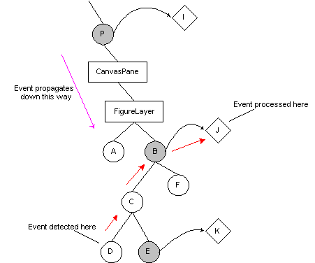

Picking and event dispatch
Event-handling uses a straight-forward hierarchical pick algorithm. When an event occurs on the JCanvas, it is converted from a MouseEvent into a LayerEvent, and passed to the dispatchEvent method of the contained CanvasPane. The pane in turn passes the event to each layer, which can choose to handle and consume the event. The EventLayer class in the diva.canvas.event package is a layer whose sole purpose is to capture events and forward them to any attached LayerListeners or LayerMotionListeners.If the layer is a FigureLayer, it handles events in such a way as to make the event appear to originate on the figure. The method FigureContainer.pick() is implemented in all implementors to recursively search for the figure immediately under the mouse coordinates. This is illustrated in the figure below as a magenta arrow.

At some point, the search for a picked figure either finds one or bottoms out with no picked figure. In the diagram, the figure labeled D is the picked figure.
The FigureLayer then searches for an Interactor to process the event. Interactors are described in more detail on the next page, but basically, they are objects that are attached to figures that implement both LayerListener and LayerMotionListener. In the example, D does not have an interactor attached (the interactors are labeled I, J, and K), so the FigureLayer searches up the tree (red arrows) looking for a figure that has one. In this example, figure B has one, so the event is passed to the interactor J for processing.
When the interactor receives the event, it will have the fields figureSource and layerSource set to the corresponding Figure and the FigureLayer that contains it, respectively, so the interactor knows which figure caused the event.